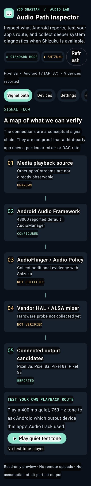
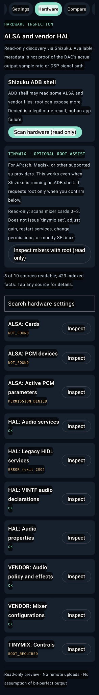

Signal path overview
View a conceptual chain from media through the Android framework toward output devices, with each stage's evidence status.
Go beyond the volume slider. Explore the audio routes, devices, formats and hardware details Android actually reports—with the evidence and limitations clearly labeled.
The app distinguishes advertised capabilities, configured settings, runtime observations and unknown values. A conceptual diagram is not proof of an end-to-end bit-perfect signal.
View a conceptual chain from media through the Android framework toward output devices, with each stage's evidence status.
Search available ALSA, HAL, vendor policy and audio properties. Optional root-assisted Tinymix listing never changes controls.
Save a local baseline, rescan after plugging in headphones or changing a setting, and review added, removed or changed facts.
Captured from a Pixel 8a development build. Availability of diagnostic data varies by device, Android version, Shizuku mode and vendor restrictions.


Connected device inventory, declared capabilities and app-specific test-tone routing where reported. No privileged service required.
Optional, user-authorized read-only framework and vendor probes. Some paths remain inaccessible because of SELinux or vendor policy.
Optional read-only listing through an explicitly approved root path. No gain changes, mixer writes, SELinux changes or HAL restarts.
Early Android source project. A successful build is not the same as a validated production release; exercise care when sharing privileged diagnostic reports.
Know the limits: Android-reported framework sample rates and vendor configurations do not prove a DAC's actual rate, bit-perfect playback or another app's current route. Reports can contain device identifiers and package names; review before sharing.